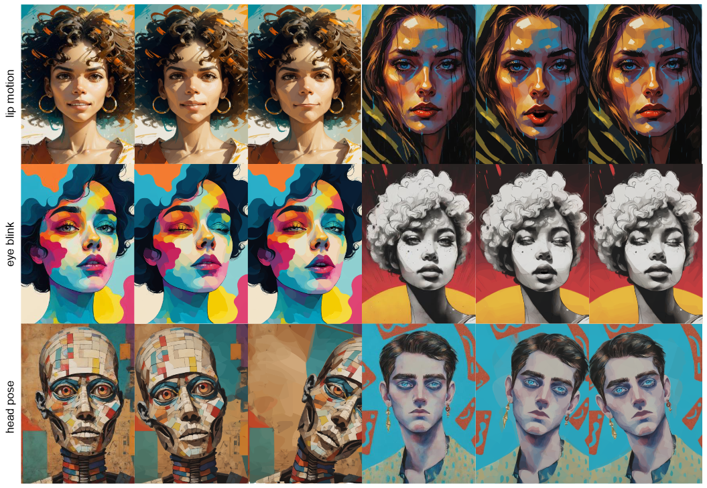

VectorTalker: SVG Talking Face Generation with Progressive Vectorisation
- Hao Hu 1
- Xuan Wang 2
- Jingxiang Sun 3
- Yanbo Fan 2
- Yu Guo 1
- Caigui Jiang 1
- 1Xi'an Jiaotong University
- 2Ant Group
- 3Tsinghua University
Abstract
High-fidelity and efficient audio-driven talking head generation has been a key research topic in computer graphics and computer vision. In this work, we study vector image based audio-driven talking head generation. Compared with directly animating the raster image that most widely used in existing works, vector image enjoys its excellent scalability being used for many applications. There are two main challenges for vector image based talking head generation: the high-quality vector image reconstruction w.r.t. the source portrait image and the vivid animation w.r.t. the audio signal. To address these, we propose a novel scalable vector graphic reconstruction and animation method, dubbed VectorTalker. Specifically, for the highfidelity reconstruction, VectorTalker hierarchically reconstructs the vector image in a coarse-to-fine manner. For the vivid audio-driven facial animation, we propose to use facial landmarks as intermediate motion representation and propose an efficient landmark-driven vector image deformation module. Our approach can handle various styles of portrait images within a unified framework, including Japanese manga, cartoon, and photorealistic images. We conduct extensive quantitative and qualitative evaluations and the experimental results demonstrate the superiority of VectorTalker in both vector graphic reconstruction and audio-driven animation.
Results
Our results of SVG animation. Our method makes SVG talk vividly. It allows the control of lip motion, eye blink and head poses.
Video
BibTeX
If you find our project useful in your research, please cite:
@InProceedings{hu2023VectorTalker,
author = {Hao, Hu and Xuan, Wang and Jingxiang, Sun and Yanbo, Fan and Yu, Guo and Caigui, Jiang},
title = {VectorTalker: SVG Talking Face Generation with Progressive Vectorisation},
booktitle = {},
year = {2023}
}